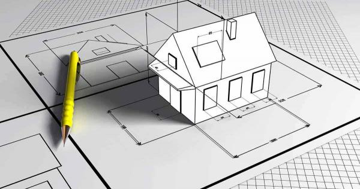
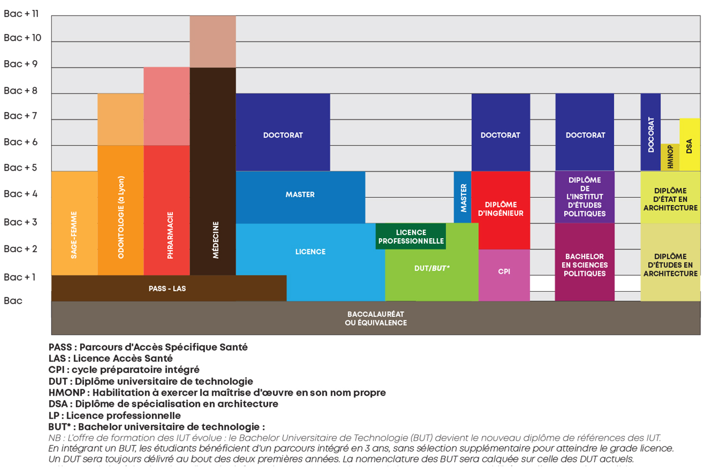

Mon metier
Mon cursus scolaire:
J'aimerais travailler comme architecte et plus précisement dans le dessin du batiment.
site du lycée pour l'architecture
Pour cela:
Je dois passer un BAC pro architecture.
Réussir à entrer en maison d'architecture.

Les éxigences:
Il faut etre bon à l'oral et parler aisement.
Avoir minimum 11 de moyenne environ.
Etre bon en math et dans les matières scientifiques.
Répondre aux exigences du client.
Les écoles d'architecture sont beaucoup demandées et les exigeances sont élevées ( le taux de réussite est d'à peu près de 60% ), souvent les élèves de première année ne savent pas vraiment ce qu'est l'architecture d'où le nombre d'échec important.
Postbac:
Il faut compter 5 ans d'études en maison d'architecture.
